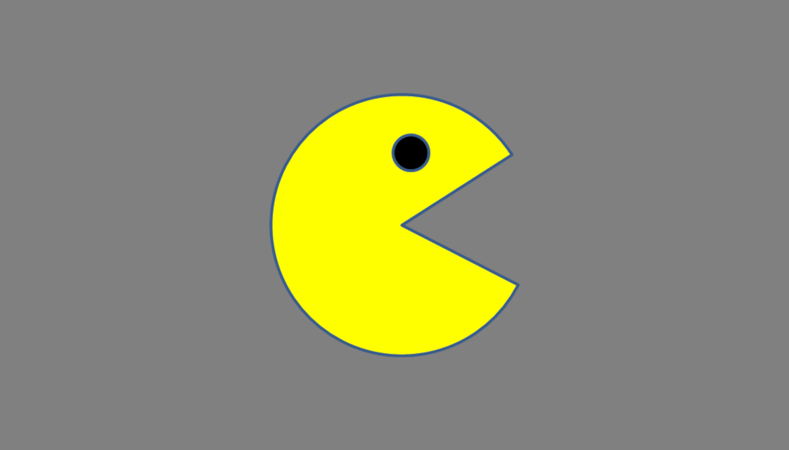

Javascript, HTML and CSS come together
Using HTML, CSS and JavaScript, one can make a PacMan icon move across the browser. Using JavaScript to move the icon, while also utilising the DOM to sense and respond to the edge of the browser. This is possible due to JavaScript and Edge Detection, identifying when the edge of a specified asset's width comes in contact with the edge of the browser page, then flipping direction and continuing it's trajectory based off it's previous collision.
Click the link button then, with your cursor, click on the PacMan in the top left hand corner to watch him move across the page. Click him again for an extra kick!